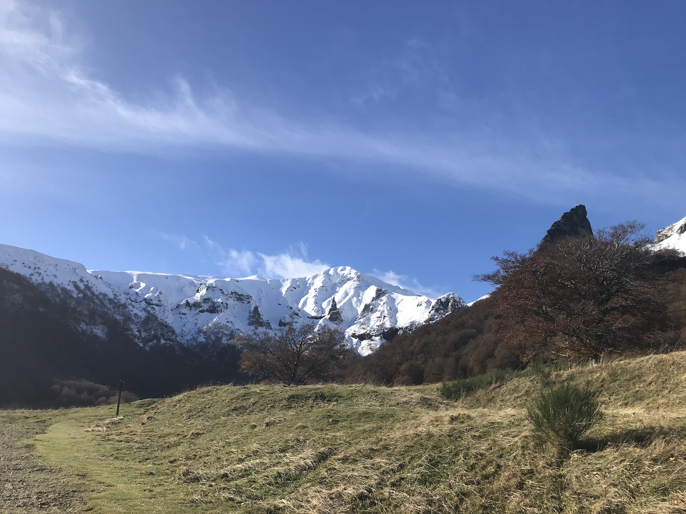
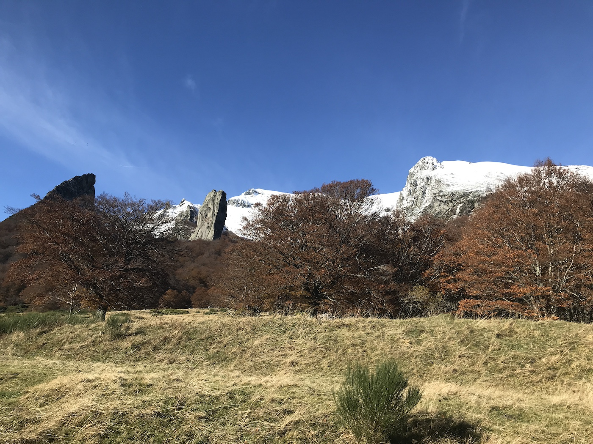
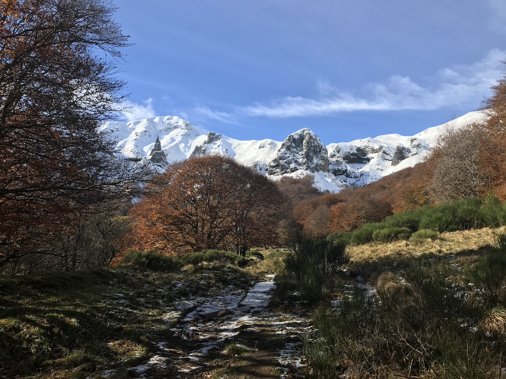
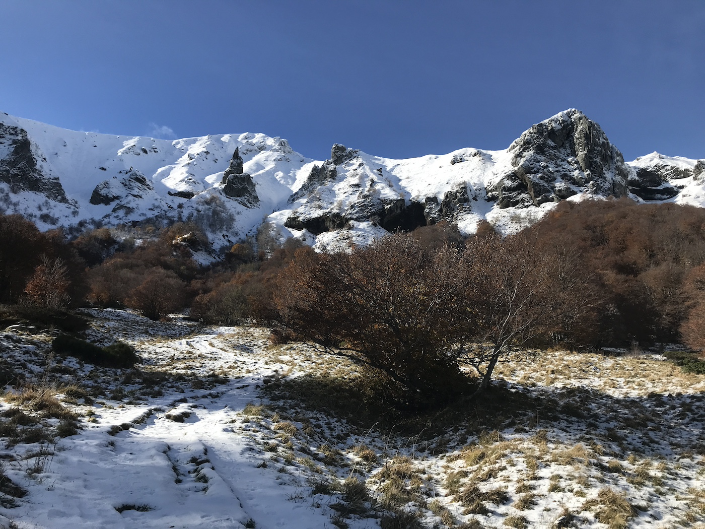

Balade dans la vallée de Chaudefour
Nous avons passé un samedi magnifique dans la vallée de Chaudefour, au pied du Sancy, pour profiter à la fois des couleurs de l’automne et de la neige.
Les cascades
Nous avons vu, à l’entrée de la vallée, la cascade de Pérouse (photo de gauche). Après avoir capahuté dans la vallée, à patauger avec émerveillement, nous avons découvert, au détour d’une corniche, la cascade au Moine. Elle était trop à l’ombre et trop loin pour qu’on puisse faire une belle photo. Enfin, nous sommes montés dans les bois et après avoir traversé moult cours d’eau, nous avons vu la cascade de la biche (photo de droite). Magnifique.
En redescendant de la vallée, la forêt était sublime.
Je me suis vautrée dans un sol particulièrement imbibé d’eau, bien moelleux, recouvert d’herbe. Un coup de chance, quand on voit les cascades (sans mauvais jeu de mot) qu’on a dû réaliser pour atteindre certains endroits.
La vue
Dès notre arrivée sur les routes des puys nous avons eu droit à une vue magnifique sur les volcans enneigés, notamment le Sancy. Une fois aux portes de la vallée, le spectacle était époustouflant.
Il y a des anomalies étonnantes dans cette vallée, comme la crête du coq (ci-dessous, à droite sur l’image).
Ou encore, la dent de la rancune (sur la photo du dessous, elle est visible à droite de la crête du coq).
 Le fond de la vallée, qui grimpe bien plus que ce qu’on pourrait croire, était bien enneigé.
Superbe balade.